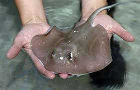
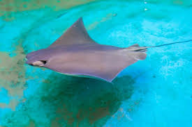

Exploring Mental Health
Childhood Trauma
The five types of childhood trauma are neglect, emotional abuse, physical abuse, sexual abuse, and witnessing violence. Around 60% of Americans will experience one or more of these. This can result in learning issues, involvement with juvenile justice systems/child welfare, health problems, and the need for mental health services. It will also heavily affect your stress responses that causes an increase in your blood pressure and heart rate in stressful situations. This is also known as a flight or fight response.
How School Effects Children
Trauma does not always come from their household. At five years old children can start school, which opens the door to new or added trauma, especially as they grow. Common issues with school are shaming, harassment, bullying, academic failure, isolation, and/or sensory overload. In the United States 33% of elementary schoolers experience bullying. Those already holding in trauma will sometimes take it out on others, creating a never-ending cycle.
Support Systems
It is important that children have more than one source of comfort and people to look out for them. These support systems can be family, friends, teachers, doctors, etc. Watching how children handle their emotions, play with others, act towards people, and speak can tell a lot about their mental development. If caught and treated early, childhood trauma can easily be healed. But the older you get the harder it is to let go, learn better coping mechanisms, and heal properly.
 
.jpg)